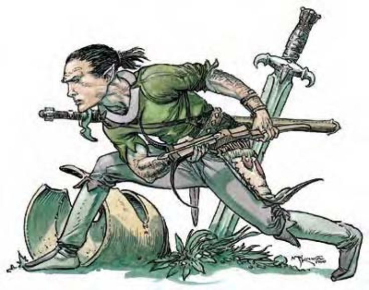

这种身高约为人类一半的人形生物有着强壮灵活的体格、红润的皮肤、黑直发与深色的眼睛。
半身人是聪明又有能力的机会主义者，不论个体或群体都可在任何地方找到容身之处。有些半身人是可靠勤勉的居民，有些则是伺机捞一票就跑的窃贼。
半身人身高约3英尺，体重则介于30至35磅，眼睛为棕色或黑色。半身人男性通常蓄有长鬓角，但很少蓄胡，唇上的髭更是少见。半身人喜欢穿着简单舒适又实用的衣服。与其他种族不同的是，半身人认为舒适才是财富的象征。半身人20岁成年，寿命可达150岁左右。
半身人通晓半身人语与通用语。在家乡之外出没的半身人多为武者，数据域位中为1级武者的范例。
半身人偏好防御式战法，通常会躲藏起来以远程武器攻击接近的敌人。半身人的战术与精灵相似，但比较重视掩蔽与隐蔽而非机动性。
半身人特性 (特异)：半身人具有下列种族特性：
― +2敏捷，-2力量。
― 小型：防御等级+1加值、攻击检定+1加值、「躲藏」检定+4加值、擒抱检定-4减值、举重和负重能力是中型人物的四分之三。
― 半身人的基本行走速度为20英尺。
― 进行「攀爬」、「跳跃」、「潜行」检定时具有+2种族加值。
― 所有豁免检定具有+1种族加值。
― 对恐惧的豁免检定有具+2士气加值。本加值可和上述+1豁免检定加值累加。
― 使用抛掷类武器与投石索的攻击检定具有+1种族加值。
― 进行「聆听」检定时具有+2种族加值。
― 母语：通用语和半身人语。额外语言：矮人语、精灵语、侏儒语、地精语、兽人语。
― 适合职业：游荡者。
此处列出的半身人武者在计算种族修正值前，具有下列属性：力量13、敏捷11、体质12、智力10、感知9、魅力8。
半身人会试着打入其他族群。他们和人类、矮人、精灵、侏儒处得不错，显得有价值又受欢迎。由于人类社会变动比其他长寿种族快，让半身人有很多途径可以钻营，所以半身人最常出现在人类居住地。
半身人常在人类或矮人城市中形成紧密的小区。半身人乐于和其他种族一起工作，却常常只和自己种族交朋友。有些半身人甚至离群索居，设立自给自足的村落。
无论如何，半身人不一定长久住在同一地点，他们常集体迁移到更有发展机会的地方，例如新矿区或因战乱而缺乏工匠之处。若机会消失或出现更好的机会，半身人会马上收拾行李再度迁移。如果持续地有发展机会，半身人会定居下来建构新村落。也有些半身人社群将迁徙视为一种生活方式，他们驾着马车船只四处流浪，永无固定居所。
半身人的主神是「受福者」悠妲��，他是半身人的保护神。对于重视其教诲、保卫氏族、抚育家庭的人，悠妲��给予保护和祝福。
| 生命骰 | 1d8+1 (5HP) |
| 先攻 | +1 |
| 速度 | 20英尺 (4格) |
| 防御等级 | 16 (+1体型、+1敏捷、+3镶嵌皮甲、+1轻型盾)、接触12、措手不及15 |
| 基本攻击/擒抱 | +1 / -3 |
| 攻击 | 长剑+3近战 (1d6/19-20)；或轻型十字弓+3远程 (1d6/19-20) |
| 全力攻击 | 长剑+3近战 (1d6/19-20)；或轻型十字弓+3远程 (1d6/19-20) |
| 占据/触及 | 5英尺 / 5英尺 |
| 特殊攻击 | 半身人特性 |
| 特殊能力 | 半身人特性 |
| 豁免 | 强韧+4、反射+2、意志+0 |
| 属性 | 力量11、敏捷13、体质12、智力10、感知9、魅力8 |
| 技能 | 攀爬+2、躲藏+4、跳跃-4、聆听+3、潜行+1 |
| 专长 | 专攻武器 (长剑) |
| 环境 | 暖温带平原 (轻足半身人)；暖温带丘陵 (深半身人)；温带森林 (高半身人) |
| 组织 | 一伙 (2-4个)、中队 (11-20，加上2个3级军士、1个3-6级干部) 或一团 (30-100，加上100%非战斗人员、每20个成年半身人1个3级军士、5个5级校尉、3个7级队长、6-10只犬以及2-5只骑乘用犬) |
| 宝藏 | 标准 |
| 阵营 | 通常绝对中立 |
| 进化 | 视人物职业而定 |
| 等级修正值 | +0 |